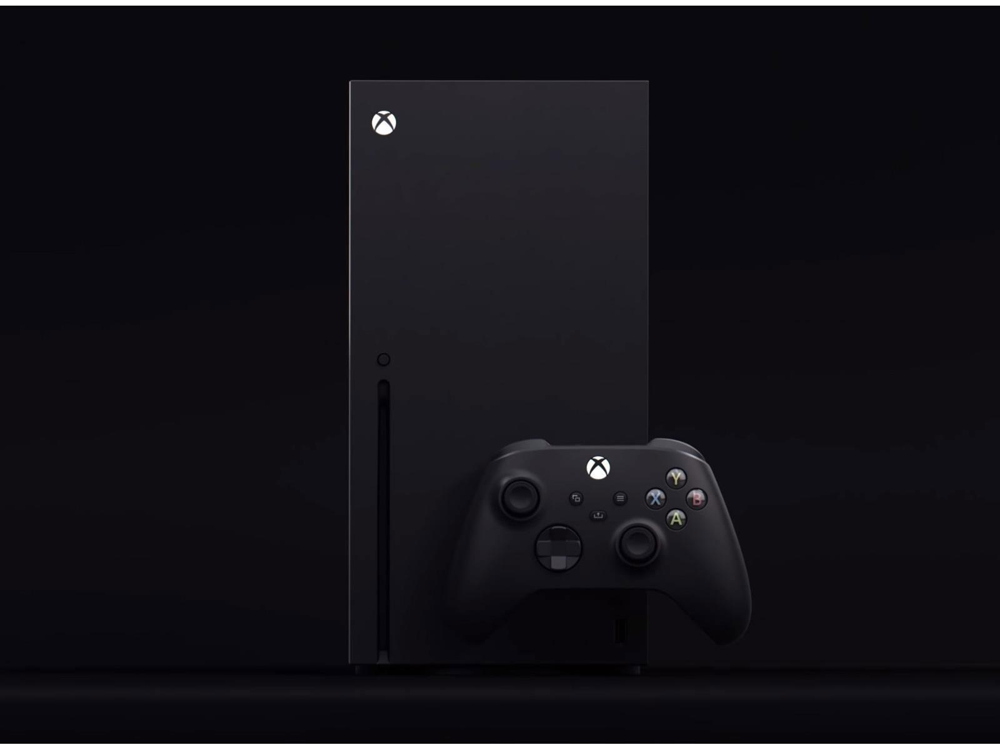

About The Xbox series X

Click here to purchase the series X today
Xbox Series X Accessories
Controller
Experience the enhanced comfort and feel of the new Xbox Wireless Controller, featuring a sleek, streamlined design and textured grip. The controller includes a 3.5mm audio jack, Bluetooth technology, and a hybrid D-pad.
Click here to purchse controller.Gaming Headset
Immerse yourself in your favorite games with a high-quality gaming headset. The Xbox Series X Gaming Headset features a comfortable, over-ear design, clear audio, and a detachable microphone for online chat and voice communication.
Click here to purchse headset.